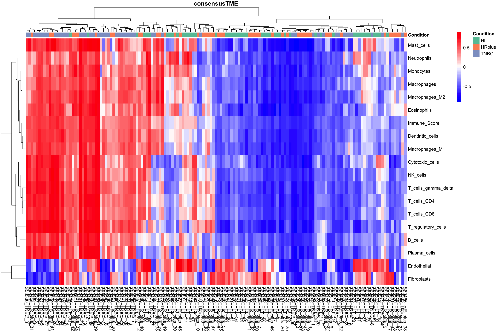
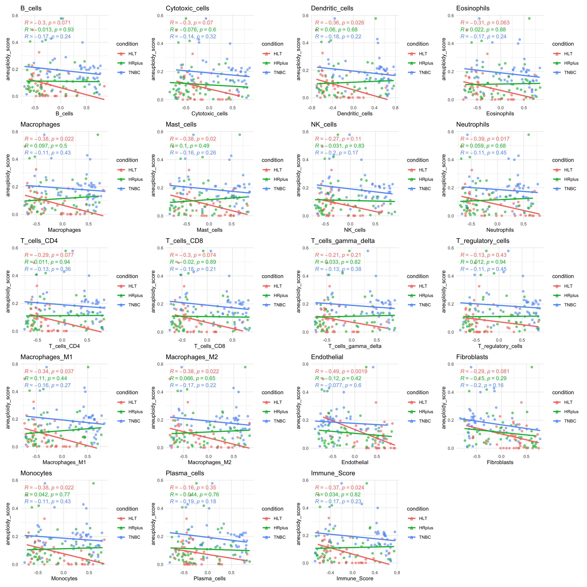
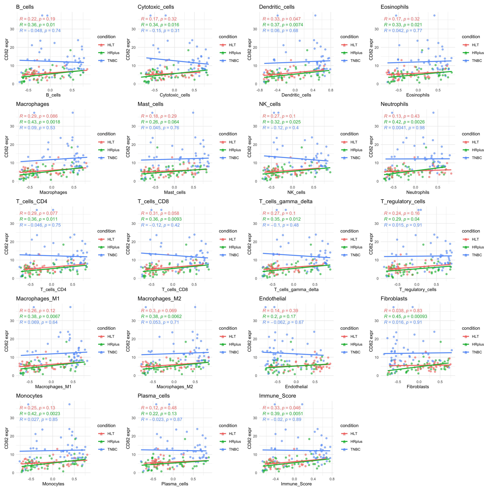
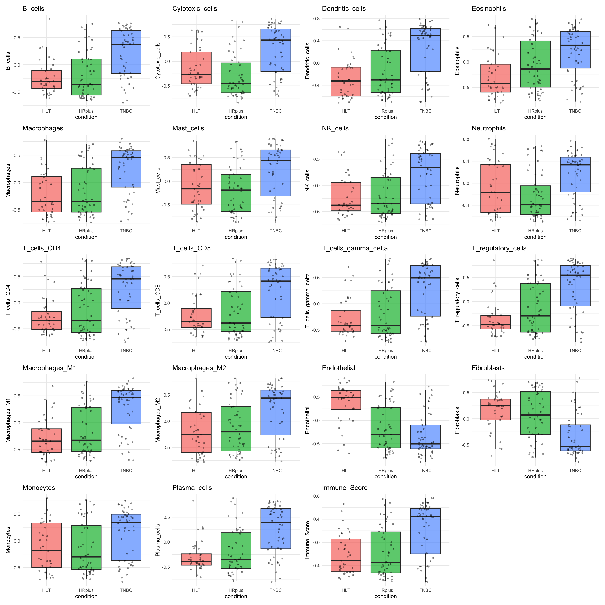
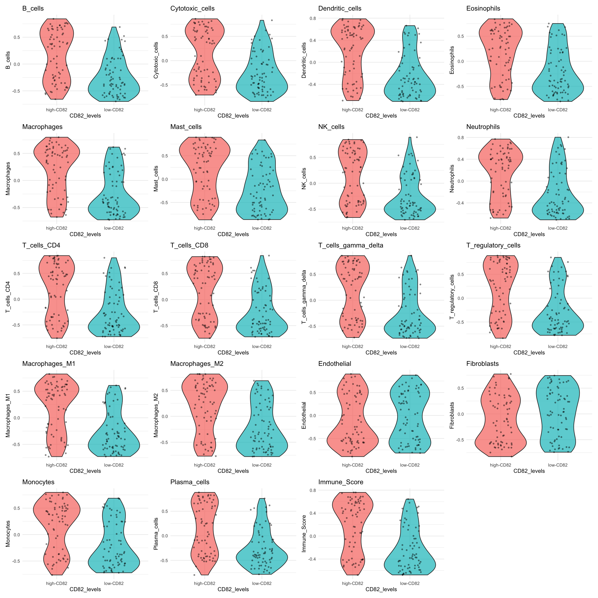
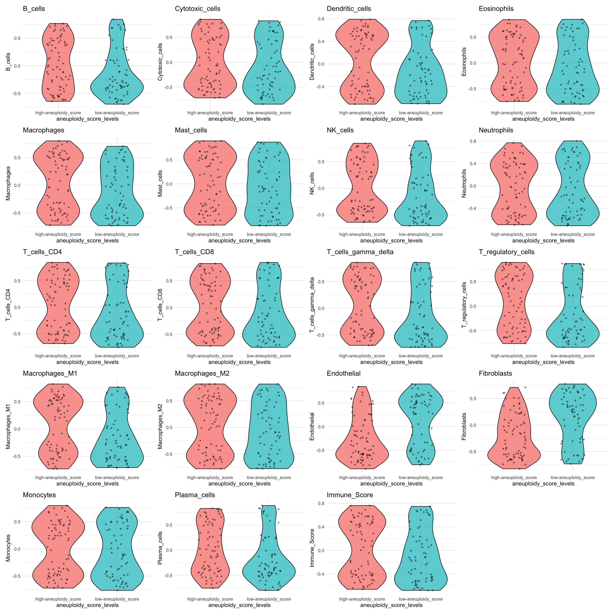
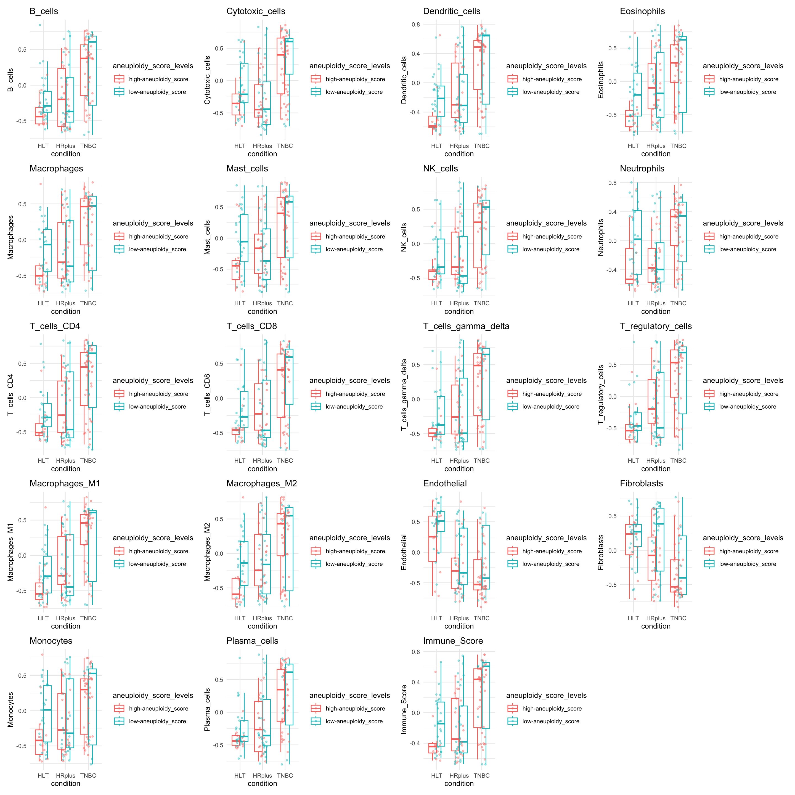
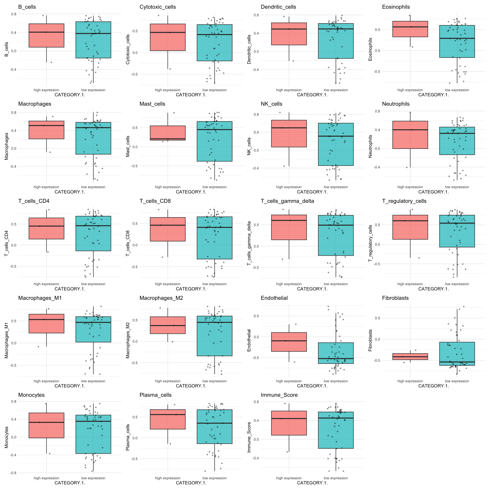

Tumour Micro-Environment Cell Estimation with ConsensusTME
20 June, 2025
Last updated: 2025-06-20
Checks: 6 1
Knit directory: casper_ss_ma/analysis/
This reproducible R Markdown analysis was created with workflowr (version 1.7.1). The Checks tab describes the reproducibility checks that were applied when the results were created. The Past versions tab lists the development history.
Great! Since the R Markdown file has been committed to the Git repository, you know the exact version of the code that produced these results.
Great job! The global environment was empty. Objects defined in the global environment can affect the analysis in your R Markdown file in unknown ways. For reproduciblity it’s best to always run the code in an empty environment.
The command set.seed(12345) was run prior to running the
code in the R Markdown file. Setting a seed ensures that any results
that rely on randomness, e.g. subsampling or permutations, are
reproducible.
Great job! Recording the operating system, R version, and package versions is critical for reproducibility.
Nice! There were no cached chunks for this analysis, so you can be confident that you successfully produced the results during this run.
Using absolute paths to the files within your workflowr project makes it difficult for you and others to run your code on a different machine. Change the absolute path(s) below to the suggested relative path(s) to make your code more reproducible.
| absolute | relative |
|---|---|
| /Volumes/scratch/DIMA/piva/casper_ss_ma/ | .. |
Great! You are using Git for version control. Tracking code development and connecting the code version to the results is critical for reproducibility.
The results in this page were generated with repository version f0e862c. See the Past versions tab to see a history of the changes made to the R Markdown and HTML files.
Note that you need to be careful to ensure that all relevant files for
the analysis have been committed to Git prior to generating the results
(you can use wflow_publish or
wflow_git_commit). workflowr only checks the R Markdown
file, but you know if there are other scripts or data files that it
depends on. Below is the status of the Git repository when the results
were generated:
Ignored files:
Ignored: .RData
Ignored: .Rhistory
Ignored: .Rproj.user/
Untracked files:
Untracked: .DS_Store
Untracked: analysis/.DS_Store
Untracked: analysis/02_degs_go_aneuploidy_median.Rmd
Untracked: analysis/03_degs_go_CD82expr_median.Rmd
Untracked: analysis/VennDiagram.2025-06-09_13-53-40.335615.log
Untracked: analysis/VennDiagram.2025-06-09_13-54-51.029086.log
Untracked: analysis/VennDiagram.2025-06-09_13-55-15.147126.log
Untracked: analysis/VennDiagram.2025-06-09_13-56-18.122749.log
Untracked: analysis/VennDiagram.2025-06-09_13-56-30.934079.log
Untracked: analysis/VennDiagram.2025-06-09_14-18-19.412377.log
Untracked: analysis/VennDiagram.2025-06-18_10-28-53.699452.log
Untracked: analysis/VennDiagram.2025-06-18_10-37-36.77178.log
Untracked: analysis/VennDiagram.2025-06-18_11-32-36.228427.log
Untracked: analysis/VennDiagram.2025-06-18_15-38-55.387683.log
Untracked: analysis/VennDiagram.2025-06-18_15-48-17.579371.log
Untracked: analysis/VennDiagram.2025-06-18_17-18-17.268774.log
Untracked: analysis/VennDiagram.2025-06-19_11-11-17.376961.log
Untracked: analysis/VennDiagram.2025-06-19_14-52-46.049026.log
Untracked: analysis/VennDiagram.2025-06-19_16-40-05.861139.log
Untracked: analysis/VennDiagram.2025-06-19_16-40-07.33202.log
Untracked: analysis/VennDiagram.2025-06-19_16-40-08.673023.log
Untracked: analysis/VennDiagram.2025-06-19_17-50-05.238063.log
Untracked: analysis/VennDiagram.2025-06-19_17-50-07.22979.log
Untracked: analysis/VennDiagram.2025-06-19_17-50-09.007028.log
Untracked: analysis/VennDiagram.2025-06-19_18-48-01.885712.log
Untracked: analysis/VennDiagram.2025-06-19_18-48-03.579702.log
Untracked: analysis/VennDiagram.2025-06-19_18-48-04.898695.log
Untracked: analysis/VennDiagram.2025-06-20_10-18-23.300456.log
Untracked: analysis/VennDiagram.2025-06-20_10-18-24.588109.log
Untracked: analysis/VennDiagram.2025-06-20_10-18-26.077856.log
Untracked: analysis/VennDiagram.2025-06-20_10-50-54.081682.log
Untracked: analysis/VennDiagram.2025-06-20_10-50-55.516535.log
Untracked: analysis/VennDiagram.2025-06-20_10-50-56.913582.log
Untracked: analysis/VennDiagram.2025-06-20_11-10-43.68944.log
Untracked: analysis/VennDiagram.2025-06-20_11-10-45.681514.log
Untracked: analysis/VennDiagram.2025-06-20_11-10-47.126222.log
Untracked: analysis/VennDiagram.2025-06-20_12-19-10.326514.log
Untracked: analysis/VennDiagram.2025-06-20_12-19-11.75991.log
Untracked: analysis/VennDiagram.2025-06-20_12-19-13.198666.log
Untracked: analysis/VennDiagram.2025-06-20_12-29-09.447741.log
Untracked: analysis/VennDiagram.2025-06-20_12-29-11.214146.log
Untracked: analysis/VennDiagram.2025-06-20_12-29-12.791818.log
Untracked: analysis/VennDiagram.2025-06-20_12-44-02.971891.log
Untracked: analysis/VennDiagram.2025-06-20_12-44-04.709094.log
Untracked: analysis/VennDiagram.2025-06-20_12-44-06.321173.log
Untracked: analysis/hsa04064.HLT-HighAS_vs_HLT-LowAS.png
Untracked: analysis/hsa04064.HLT-HighCD82_vs_HLT-LowCD82.png
Untracked: analysis/hsa04064.HRplus-HighAS_vs_HRplus-LowAS.png
Untracked: analysis/hsa04064.HRplus-HighCD82_vs_HRplus-LowCD82.png
Untracked: analysis/hsa04064.HRplus_vs_HLT.png
Untracked: analysis/hsa04064.TNBC-HighAS_vs_TNBC-LowAS.png
Untracked: analysis/hsa04064.TNBC-HighCD82_vs_TNBC-LowCD82.png
Untracked: analysis/hsa04064.TNBC_vs_HLT.png
Untracked: analysis/hsa04064.TNBC_vs_HRplus.png
Untracked: analysis/hsa04064.png
Untracked: analysis/hsa04064.xml
Untracked: code/
Untracked: data/
Untracked: degs_HLT-HighAS_vs_HLT-LowAS.csv
Untracked: degs_HLT-HighCD82_vs_HLT-LowCD82.csv
Untracked: degs_HRplus-HighAS_vs_HRplus-LowAS.csv
Untracked: degs_TNBC-HighCD82_vs_TNBC-LowCD82.csv
Untracked: output/
Unstaged changes:
Modified: analysis/00_casper_analysis.Rmd
Deleted: analysis/02_deconvolution.Rmd
Modified: analysis/index.Rmd
Modified: casper_ss_ma.Rproj
Note that any generated files, e.g. HTML, png, CSS, etc., are not included in this status report because it is ok for generated content to have uncommitted changes.
These are the previous versions of the repository in which changes were
made to the R Markdown (analysis/04_deconvolution.Rmd) and
HTML (docs/04_deconvolution.html) files. If you’ve
configured a remote Git repository (see ?wflow_git_remote),
click on the hyperlinks in the table below to view the files as they
were in that past version.
| File | Version | Author | Date | Message |
|---|---|---|---|---|
| Rmd | f0e862c | annamariapiva | 2025-06-20 | new reports |
knitr::opts_chunk$set(echo = FALSE, message = FALSE, warning = FALSE)ConsensusTME
To estimate the abundance of tumor-infiltrating immune and stromal cell populations from bulk RNA-seq data, we used the ConsensusTME R package. ConsensusTME implements a consensus-based approach that integrates multiple published immune deconvolution methods to provide robust and comprehensive cell-type enrichment scores.
The consensus gene sets are applied within a single-sample gene set enrichment analysis (ssGSEA) framework to compute normalized enrichment scores (NES) for each cell type. These scores represent the relative abundance of immune and stromal cell types across samples, not across cell types within a sample.
It is important to note that these scores allow for comparisons between samples, but not between different cell types in the same sample. The Immune Score summarizes the overall immune infiltration level for each sample and can be used to stratify tumors based on immune context.
Samples
To investigate the relationship between TME content, CD82 gene expression and aneuploidy levels, we stratified samples based on:
CD82 expression: Samples were divided into high-CD82 and low-CD82 groups using the median expression value of the gene CD82 across all the conditions as the cutoff.
Aneuploidy score: Samples were categorized into high-aneuploidy and low-aneuploidy groups using a fixed threshold of 0.1 on the aneuploidy score (defined by looking at aneuploidy score distribution across all the conditions)
Method selection
To estimate cell-type or pathway activity from bulk RNA-seq data, we applied gene set scoring methods available in ConsensusTME, including ssgsea, singScore, gsva, plage, and zscore.
- ssGSEA (Single Sample GSEA) calculates enrichment scores per sample by integrating gene ranks across each gene set. It is robust to noise and does not require normalized input.
- singScore is a rank-based, non-parametric method similar to ssGSEA but simpler and faster.
- GSVA (Gene Set Variation Analysis) estimates gene set enrichment as a continuous function of gene expression and is ideal for normalized data such as TPM or VST.
- PLAGE (Pathway Level Analysis of Gene Expression) uses principal component analysis (PCA) to summarize gene set activity, assuming multivariate normality.
- Z-score computes the standardized average expression of genes within each gene set.
For the following analysis, we used GSVA method and provided TPM counts matrix as input.
Results
The output of the ConsensusTME analysis is a matrix of cell-type scores, where each row represents a sample and each column corresponds to an estimated abundance or activity of a specific immune or stromal cell type. The following heatmap represents the results of the analysis

Correlation between TME enrichment and aneuploidy score (from CaSPeR)

Correlation between TME enrichment and CD82 gene expression

Boxplot of TME enrichment across conditions

Boxplot of TME enrichment across CD82 gene levels (stratified by median)

Boxplot of TME enrichment across aneuploidy score levels (stratified by median)

Boxplot of TME enrichment across CD82 expression categories (by IHC) in TNBC
Only TNBC samples are included as only 3 TNBC samples are categorized as high-expression by IHC

R version 4.3.1 (2023-06-16)
Platform: aarch64-apple-darwin20 (64-bit)
Running under: macOS 15.4.1
Matrix products: default
BLAS: /Library/Frameworks/R.framework/Versions/4.3-arm64/Resources/lib/libRblas.0.dylib
LAPACK: /Library/Frameworks/R.framework/Versions/4.3-arm64/Resources/lib/libRlapack.dylib; LAPACK version 3.11.0
locale:
[1] en_US.UTF-8/en_US.UTF-8/en_US.UTF-8/C/en_US.UTF-8/en_US.UTF-8
time zone: Europe/Rome
tzcode source: internal
attached base packages:
[1] stats graphics grDevices utils datasets methods base
other attached packages:
[1] patchwork_1.3.0 ggpubr_0.6.0 ggplot2_3.5.2
[4] pheatmap_1.0.13 ConsensusTME_0.0.1.9000 RSQLite_2.4.1
loaded via a namespace (and not attached):
[1] DBI_1.2.3 bitops_1.0-9
[3] GSEABase_1.62.0 rlang_1.1.6
[5] magrittr_2.0.3 git2r_0.36.2
[7] matrixStats_1.5.0 compiler_4.3.1
[9] mgcv_1.9-1 DelayedMatrixStats_1.22.6
[11] reshape2_1.4.4 png_0.1-8
[13] vctrs_0.6.5 stringr_1.5.1
[15] pkgconfig_2.0.3 crayon_1.5.3
[17] fastmap_1.2.0 backports_1.5.0
[19] XVector_0.40.0 labeling_0.4.3
[21] promises_1.3.3 rmarkdown_2.29
[23] graph_1.78.0 purrr_1.0.4
[25] bit_4.6.0 xfun_0.52
[27] zlibbioc_1.46.0 cachem_1.1.0
[29] beachmat_2.16.0 GenomeInfoDb_1.36.4
[31] jsonlite_2.0.0 blob_1.2.4
[33] later_1.4.2 rhdf5filters_1.12.1
[35] DelayedArray_0.26.7 Rhdf5lib_1.22.1
[37] BiocParallel_1.34.2 broom_1.0.8
[39] irlba_2.3.5.1 parallel_4.3.1
[41] singscore_1.20.0 R6_2.6.1
[43] bslib_0.9.0 stringi_1.8.7
[45] RColorBrewer_1.1-3 limma_3.56.2
[47] car_3.1-3 GenomicRanges_1.52.1
[49] jquerylib_0.1.4 Rcpp_1.0.14
[51] SummarizedExperiment_1.30.2 knitr_1.50
[53] GSVA_1.48.3 IRanges_2.34.1
[55] splines_4.3.1 tidyselect_1.2.1
[57] httpuv_1.6.16 Matrix_1.6-4
[59] rstudioapi_0.17.1 abind_1.4-8
[61] yaml_2.3.10 codetools_0.2-20
[63] plyr_1.8.9 lattice_0.22-7
[65] tibble_3.3.0 withr_3.0.2
[67] Biobase_2.60.0 KEGGREST_1.40.1
[69] evaluate_1.0.4 Biostrings_2.68.1
[71] pillar_1.10.2 carData_3.0-5
[73] MatrixGenerics_1.12.3 whisker_0.4.1
[75] stats4_4.3.1 generics_0.1.4
[77] rprojroot_2.0.4 RCurl_1.98-1.17
[79] S4Vectors_0.38.2 sparseMatrixStats_1.12.2
[81] scales_1.4.0 xtable_1.8-4
[83] glue_1.8.0 tools_4.3.1
[85] ScaledMatrix_1.8.1 ggsignif_0.6.4
[87] locfit_1.5-9.12 annotate_1.78.0
[89] fs_1.6.6 XML_3.99-0.18
[91] rhdf5_2.44.0 grid_4.3.1
[93] tidyr_1.3.1 edgeR_3.42.4
[95] AnnotationDbi_1.62.2 SingleCellExperiment_1.22.0
[97] nlme_3.1-168 GenomeInfoDbData_1.2.10
[99] BiocSingular_1.16.0 HDF5Array_1.28.1
[101] Formula_1.2-5 cli_3.6.5
[103] rsvd_1.0.5 workflowr_1.7.1
[105] S4Arrays_1.0.6 dplyr_1.1.4
[107] gtable_0.3.6 rstatix_0.7.2
[109] sass_0.4.10 digest_0.6.37
[111] BiocGenerics_0.46.0 farver_2.1.2
[113] memoise_2.0.1 htmltools_0.5.8.1
[115] lifecycle_1.0.4 httr_1.4.7
[117] bit64_4.6.0-1